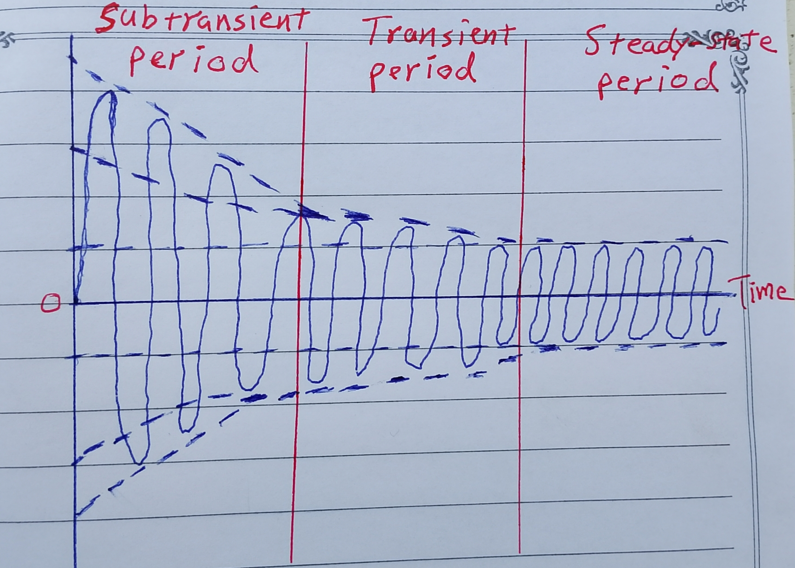

-
Synchronous Generator Reactance
2026-07-31
When calculating the short circuit current for a synchronous generator, we use sub-transient synchronous reactance (X″) instead of synchronous reactance (X).
I found it confusing: what are sub-transient and transient reactance? Why are there different types of reactance in a synchronous generator?
When a fault occurs, the AC component of current jumps to a very large value and falls rapidly until it reaches a steady-state value. It can be divided into three periods: the sub-transient period is the first few cycles after the fault occurs and is characterized by a very large AC current that falls very rapidly. After it is over, the transient period begins, and in this period the current continues to fall at a slower rate until it reaches the steady-state current. The time after it reaches steady state is called the steady-state period, as shown in the image.
The AC current flowing in the generator during the sub-transient period is called the sub-transient current and is denoted by I″. This current is caused by the damper windings on synchronous generators and can often be 10 times the size of the steady-state fault current.
Similarly, the AC current flowing in the generator during the transient period is called the transient current and is denoted by I′. It is caused by a DC component of current induced in the field circuit at the time of the short circuit. The transient period lasts much longer than the sub-transient period and is often as much as 5 times the steady-state fault current.
After the transient period, the fault current reaches a steady-state condition. The steady-state current during a fault is denoted by Iss.
It is customary to define sub-transient and transient reactances for a synchronous machine as a convenient way to describe the sub-transient and transient components of fault current.
1. The sub-transient state (X″) is the one the generator enters immediately after the fault (short circuit). In this state, the armature flux is pushed completely out of the rotor. The state is very brief, as the current in the damper winding quickly decays, allowing the armature flux to enter the rotor poles only. The generator then goes into the transient state.
2. In the transient state (X′), the flux is still out of the field winding of the rotor. The transient state decays to steady-state in a few cycles.
The sub-transient (X″) and transient (X′) states are characterized by significantly smaller reactances. For the purposes of sizing protective equipment, the sub-transient current and the transient current are the maximum values that the respective currents take on. We use sub-transient reactance (X″) for calculating short-circuit currents, as it determines the initial fault current during the first cycles of a fault condition (the high initial fault currents right after the disturbance).
References
- Electric Machinery Fundmentals by Stephen J. Chapman
- Wikipedia